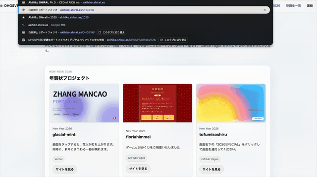
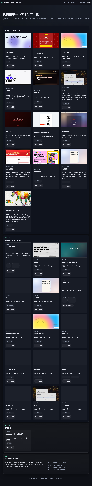
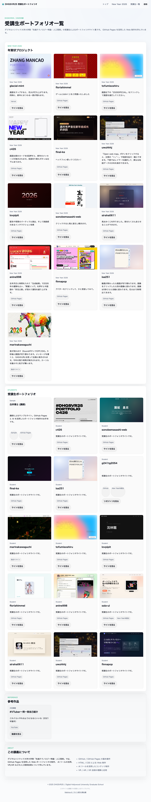

Behind the Scenes
DHGSVR25 サイト制作の舞台裏
このページでは、受講生ポートフォリオサイトの進化過程を記録しています。 各バージョンの変更点とその意図を振り返ります。
Changelog
バージョン履歴
v3 / 2025-02-14
フリップブック演出 + ライトテーマ化
ページ読み込み時に23枚の受講生作品スクリーンショットがパタパタとめくれるフリップブック演出を追加。 配色を白ベースのライトテーマに変更し、よりポートフォリオらしい洗練された見た目に。
フリップブック演出デモ
ライトテーマ版

v2 / 2025-02-13
スクリーンショット付きカード + 3カラムグリッド
Playwright で全受講生サイトのスクリーンショットを自動撮影（23枚）。 カードにサムネイル画像を追加し、1行3列のグリッドレイアウトに変更。 「New Year 2026」と「受講生ポートフォリオ」にセクション分離。
v1 / 2025-02-13
初版 - 受講生ポートフォリオ一覧
ダークテーマのポートフォリオ一覧ページを初作成。 共有CSS（assets/styles.css）を使用したレスポンシブグリッドレイアウト。 受講生のGitHub Pagesリンクをカード形式で一覧化。
Comparison
ダーク版 vs ライト版
Before（Dark Theme / v1）
After（Light Theme / v3）
Technical
技術メモ
フリップブック演出
- 23枚のPNGを
new Image()で事前読み込み（合計約3MB） setTimeoutによる可変フレームレート（60ms → 300ms）- 二次曲線の減速で「パタパタ」感を演出
- 2周サイクル後にCSSトランジションでフェードアウト
prefers-reduced-motion対応<noscript>でJS無効時はオーバーレイ非表示
ライトテーマ切り替え
- 共有CSSの
:root変数をインライン<style>で上書き - ルートの index.html（ダークテーマ）には影響なし
- ハードコードされた
rgba値（header等）は個別にオーバーライド - アクセントカラーを白背景用に暗めに調整（#7ce7c1 → #0ea573）
- WCAG AA コントラスト比を意識した配色
Structure
ファイル構成
DHGSVR25/
index.html ← メインページ（ライトテーマ + フリップブック）
index-v1-dark.html ← v1アーカイブ（ダークテーマ）
making-of.html ← このページ
blog-making-of-dhgsvr25.md ← ブログ用 Markdown
screenshots/ ← 受講生作品スクリーンショット（23枚）
screenshots/archive/ ← バージョン比較用スクリーンショット